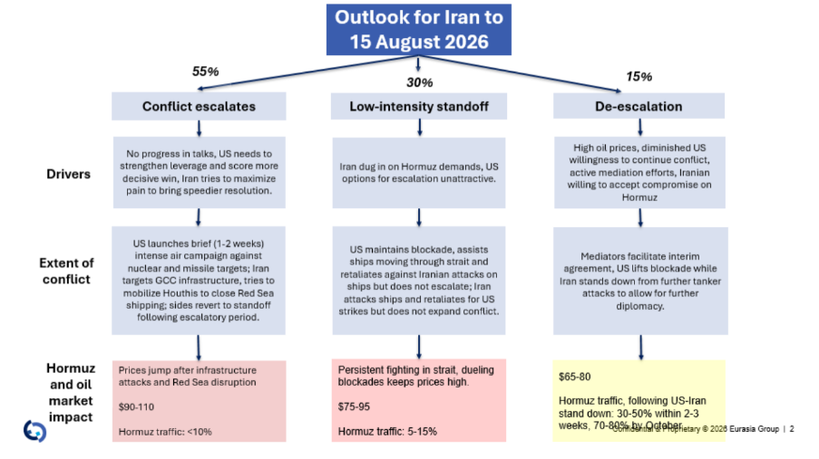

|
 |
|||
|
||||
|
||
This is an AI-generated summary based on the call transcript. A full transcript, audio, video, and slides from this call are available. You can access other Eurasia Group conference calls through a personalized link for select podcast readers here. Speakers:
Scenario Shift: Shaky Peace Is Over Eurasia Group has retired its Shaky Peace base case. The US rescinded Iran's oil sanctions waiver and announced a resumption of its blockade of Iran, effective this afternoon. Combined with intensified skirmishing — including Iranian attacks on at least two UAE oil tankers — these moves rendered the Memorandum of Understanding (MOU) reached in late June functionally moot. The new scenario framework:
A key driver of the base case is that diplomatic channels are quiet. Talks between Iran and Oman over the weekend produced no progress on the core issue of Iran's status in the strait.  Oil Price Outlook The prior price range of $65–$80/bbl assumed the Shaky Peace held. That assumption is gone.
Moving into fall, if traffic through Hormuz remains depressed and Iran succeeds in hitting regional energy infrastructure, prices could breach the $110 ceiling. Iranian Strategy and Capabilities Iran's core objective — permanent control over Hormuz, including authority over who transits and on what terms — is the primary driver of this escalation, distinct from earlier phases of the conflict. Iran has demonstrated the ability to disrupt strait traffic even under sustained bombardment. Key capabilities include anti-ship ballistic missiles (ASBMs), cruise missiles, fast boats, mines, and fiber-optic drones capable of targeting bridge stations, engine rooms, and rudders on large vessels. The Iranians also possess Maneuvering Reentry Vehicles (MARVs) — re-entry vehicles with hypersonic terminal-phase maneuverability — which have proven difficult to intercept and were used to target US military bases. Countering MARVs requires Terminal High Altitude Area Defense (THAAD) systems, which are increasingly in short supply. Strait traffic has already fallen from 20–40 transits per week to 5–12, per Kpler. The Joint Maritime Information Center (JMIC) and the International Maritime Organization (IMO) have both raised threat levels and discouraged transits. The current Iranian leadership is highly risk-acceptant, viewing military force as its primary strategic lever. Domestic economic deterioration — rolling blackouts, rising inflation, a weakening rial — has not moderated this posture. The regime retains a vocal hardline base supportive of aggressive tactics. US Posture and Constraints Trump's willingness to re-escalate is higher than most observers anticipated. Key factors:
The long-term US end state likely involves accepting some form of divided or contested control of Hormuz, with the Navy providing selective escort protection — particularly through the Omani Channel — rather than full denial of Iranian influence. GCC: Increasing Exposure, Differentiated Impact GCC states are no longer uniformly counseling restraint. After weeks of Iranian attacks on Kuwait, Bahrain, Qatar, and Oman — while Saudi Arabia and the UAE have been largely spared — smaller states have shifted toward supporting more decisive US action. UAE exception: The UAE has not been targeted. Speculation about a $10 billion Iranian asset unfreeze (reported by Reuters) was not confirmed by Eurasia Group's contacts. The more likely explanation: UAE financial channels provide economic breathing room for Iran, and the Iranians prefer to keep this a US-Iran-Israel confrontation rather than a GCC-Iran one. However, this protection for the UAE is expected to erode if US strikes on Iran intensify. GCC target set: Iranian retaliation against GCC infrastructure will likely mirror the US target set in Iran. If the US strikes civilian infrastructure or energy assets, reciprocal Iranian attacks on GCC energy infrastructure — including potentially in the Eastern Province of Saudi Arabia — are expected. Iraqi militias represent an additional vector, having targeted Saudi and Kuwaiti infrastructure in prior rounds. Saudi-Houthi escalation: The Houthis, backed by Iran, flew a delegation to Supreme Leader Ali Khamenei’s funeral on an Iranian Mahan Air flight in violation of Saudi-enforced restrictions on Houthi-controlled airspace. When the delegation attempted to return, the Saudis struck Sanaa airport. The Houthis responded with a strike on Abha airport in southern Saudi Arabia. Eurasia Group expects this escalation to remain limited: the Houthis want economic concessions from Riyadh, not an extended war. Saudi Arabia holds north of 8,000 Patriot interceptors and is well-positioned to defend against incoming missiles, though Iranian MARV-equipped missiles remain a higher-order threat. Longer-term GCC strategy: Three tracks — detente after the coming two to three weeks of intense action; deterrence investment (one to three years to build effective capability as Iranian capacity degrades); and diversification away from Hormuz dependency via expanded pipeline and port infrastructure (Fujairah pipeline capacity expansion, new Fujairah port, Saudi, Qatari, and Kuwaiti alternatives). Key Watch Items
What Clients Are Asking Iranian control of the Strait — what does Iran actually want? Iran wants permanent authority over who transits Hormuz and a monetary reward beyond nominal transit fees. This goes beyond compromise solutions currently being floated by Oman and the GCC, and Iran is willing to hold this position for a prolonged period. Why has the UAE been spared from Iranian attacks? The Reuters-reported $10 billion asset unfreeze was not confirmed by Eurasia Group's sources. The more credible explanation is that UAE financial channels serve Iranian economic interests, and Iran prefers to frame this as a US-Iran-Israel conflict rather than a GCC-Iran one. The UAE’s immunity is expected to erode if escalation intensifies. What is the realistic end state for Hormuz? A "hot ceasefire" is more likely than a durable agreement — continued contested control of the strait, with the US providing selective naval escorts and accepting that Iran retains meaningful influence. A clean resolution analogous to the MOU is unlikely given how quickly that deal collapsed. What are the risks to GCC energy infrastructure? Iranian retaliation against GCC infrastructure is expected to mirror US targeting in Iran. Iraqi militias represent an additional threat vector beyond direct Iranian strikes. The Saudi Patriot stockpile provides meaningful defense, but MARV-equipped Iranian missiles remain a harder intercept problem. How long can the US sustain military operations? The window runs until approximately mid-August, when contingency funding constraints, munitions stockpile drawdown, and the SPR buffer will become issues. Congressional leverage over additional military funding — not midterm politics — is the binding constraint on Trump's freedom of action. Please note that while this AI generated summary has been checked for accuracy against the source material, it may not capture every nuance or qualifier from the discussion. The full transcript or audio should be consulted for complete context. |